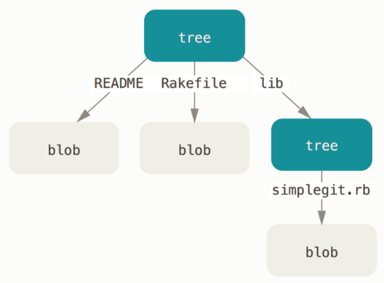
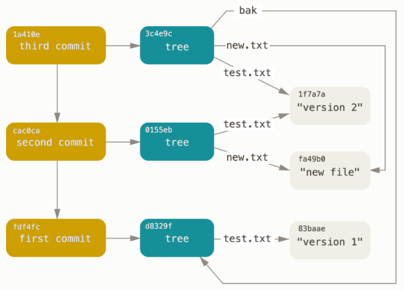

Git object
Plumbing and Porcelain
This book covers how to use Git with 30 or so verbs such as checkout, branch, remote, and so on. But because Git was initially a toolkit for a VCS rather than a full user-friendly VCS, it has a bunch of verbs that do low-level work and were designed to be chained together UNIX style or called from scripts. These commands are generally referred to as “plumbing” commands, and the more user-friendly commands are called “porcelain” commands.
The book’s first nine chapters deal almost exclusively with porcelain commands. But in this chapter, you’ll be dealing mostly with the lower-level plumbing commands, because they give you access to the inner workings of Git, and help demonstrate how and why Git does what it does.
When you run git init in a new or existing directory, Git creates the .git directory, This entire chapter basically deals with the stuff in this directory. Here’s what it looks like:
$ ls -F1
HEAD
config*
description
hooks/
info/
objects/
refs/
You may see some other files in there, but this is a fresh git init repository – it’s what you see by default. The description file is only used by the GitWeb program, so don’t worry about it. The config file contains your project-specific configuration options, and the info directory keeps a global exclude file for ignored patterns that you don’t want to track in a .gitignore file. The hooks directory contains your client- or server-side hook scripts, which are discussed in detail in Git Hooks.
This leaves four important entries: the HEAD and (yet to be created) index files, and the objects and refs directories. These are the core parts of Git. The objects directory stores all the content for your database, the refs directory stores pointers into commit objects in that data (branches), the HEAD file points to the branch you currently have checked out, and the index file is where Git stores your staging area information. You’ll now look at each of these sections in detail to see how Git operates.
Git Objects
Git is a content-addressable filesystem. Great. What does that mean? It means that at the core of Git is a simple key-value data store. You can insert any kind of content into it, and it will give you back a key that you can use to retrieve the content again at any time. To demonstrate, you can use the plumbing command hash-object, which takes some data, stores it in your .git directory, and gives you back the key the data is stored as. First, you initialize a new Git repository and verify that there is nothing in the objects directory:
$ git init test
Initialized empty Git repository in /tmp/test/.git/
$ cd test
$ find .git/objects
.git/objects
.git/objects/info
.git/objects/pack
$ find .git/objects -type f
Git has initialized the objects directory and created pack and info subdirectories in it, but there are no regular files. Now, store some text in your Git database:
$ echo 'test content' | git hash-object -w --stdin
d670460b4b4aece5915caf5c68d12f560a9fe3e4
The output from the command is a 40-character checksum hash. This is the SHA-1 hash – a checksum of the content you’re storing plus a header, which you’ll learn about in a bit. Now you can see how Git has stored your data:
$ find .git/objects -type f
.git/objects/d6/70460b4b4aece5915caf5c68d12f560a9fe3e4
You can see a file in the objects directory. This is how Git stores the content initially – as a single file per piece of content, named with the SHA-1 checksum of the content and its header. The subdirectory is named with the first 2 characters of the SHA-1, and the filename is the remaining 38 characters.
You can pull the content back out of Git with the cat-file command. This command is sort of a Swiss army knife for inspecting Git objects. Passing -p to it instructs the cat-file command to figure out the type of content and display it nicely for you:
$ git cat-file -p d670460b4b4aece5915caf5c68d12f560a9fe3e4
test content
Now, you can add content to Git and pull it back out again. You can also do this with content in files. For example, you can do some simple version control on a file. First, create a new file and save its contents in your database:
$ echo 'version 1' > test.txt
$ git hash-object -w test.txt
83baae61804e65cc73a7201a7252750c76066a30
Then, write some new content to the file, and save it again:
$ echo 'version 2' > test.txt
$ git hash-object -w test.txt
1f7a7a472abf3dd9643fd615f6da379c4acb3e3a
Your database contains the two new versions of the file as well as the first content you stored there:
$ find .git/objects -type f
.git/objects/1f/7a7a472abf3dd9643fd615f6da379c4acb3e3a
.git/objects/83/baae61804e65cc73a7201a7252750c76066a30
.git/objects/d6/70460b4b4aece5915caf5c68d12f560a9fe3e4
Now you can revert the file back to the first version
$ git cat-file -p 83baae61804e65cc73a7201a7252750c76066a30 > test.txt
$ cat test.txt
version 1
But remembering the SHA-1 key for each version of your file isn’t practical; plus, you aren’t storing the filename in your system – just the content. This object type is called a blob. You can have Git tell you the object type of any object in Git, given its SHA-1 key, with cat-file -t:
$ git cat-file -t 1f7a7a472abf3dd9643fd615f6da379c4acb3e3a
blob
Tree Objects
The next type we’ll look at is the tree, which solves the problem of storing the filename and also allows you to store a group of files together. Git stores content in a manner similar to a UNIX filesystem, but a bit simplified. All the content is stored as tree and blob objects, with trees corresponding to UNIX directory entries and blobs corresponding more or less to inodes or file contents. A single tree object contains one or more tree entries, each of which contains a SHA-1 pointer to a blob or subtree with its associated mode, type, and filename. For example, the most recent tree in a project may look something like this:
$ git cat-file -p master^{tree}
100644 blob a906cb2a4a904a152e80877d4088654daad0c859 README
100644 blob 8f94139338f9404f26296befa88755fc2598c289 Rakefile
040000 tree 99f1a6d12cb4b6f19c8655fca46c3ecf317074e0 lib
The master^{tree} syntax specifies the tree object that is pointed to by the last commit on your master branch. Notice that the lib subdirectory isn’t a blob but a pointer to another tree:
$ git cat-file -p 99f1a6d12cb4b6f19c8655fca46c3ecf317074e0
100644 blob 47c6340d6459e05787f644c2447d2595f5d3a54b simplegit.rb
Conceptually, the data that Git is storing is something like this:

Commit Objects
You have three trees that specify the different snapshots of your project that you want to track, but the earlier problem remains: you must remember all three SHA-1 values in order to recall the snapshots. You also don’t have any information about who saved the snapshots, when they were saved, or why they were saved. This is the basic information that the commit object stores for you.
To create a commit object, you call commit-tree and specify a single tree SHA-1 and which commit objects, if any, directly preceded it. Start with the first tree you wrote:
$ echo 'first commit' | git commit-tree d8329f
fdf4fc3344e67ab068f836878b6c4951e3b15f3d
You will get a different hash value because of different creation time and author data. Replace commit and tag hashes with your own checksums further in this chapter. Now you can look at your new commit object with cat-file:
$ git cat-file -p fdf4fc3
tree d8329fc1cc938780ffdd9f94e0d364e0ea74f579
author Scott Chacon <schacon@gmail.com> 1243040974 -0700
committer Scott Chacon <schacon@gmail.com> 1243040974 -0700
first commit
The format for a commit object is simple: it specifies the top-level tree for the snapshot of the project at that point; the author/committer information (which uses your user.name and user.email configuration settings and a timestamp); a blank line, and then the commit message.
Next, you’ll write the other two commit objects, each referencing the commit that came directly before it:
$ echo 'second commit' | git commit-tree 0155eb -p fdf4fc3
cac0cab538b970a37ea1e769cbbde608743bc96d
$ echo 'third commit' | git commit-tree 3c4e9c -p cac0cab
1a410efbd13591db07496601ebc7a059dd55cfe9
Each of the three commit objects points to one of the three snapshot trees you created. Oddly enough, you have a real Git history now that you can view with the git log command, if you run it on the last commit SHA-1:
$ git log --stat 1a410e
commit 1a410efbd13591db07496601ebc7a059dd55cfe9
Author: Scott Chacon <schacon@gmail.com>
Date: Fri May 22 18:15:24 2009 -0700
third commit
bak/test.txt | 1 +
1 file changed, 1 insertion(+)
commit cac0cab538b970a37ea1e769cbbde608743bc96d
Author: Scott Chacon <schacon@gmail.com>
Date: Fri May 22 18:14:29 2009 -0700
second commit
new.txt | 1 +
test.txt | 2 +-
2 files changed, 2 insertions(+), 1 deletion(-)
commit fdf4fc3344e67ab068f836878b6c4951e3b15f3d
Author: Scott Chacon <schacon@gmail.com>
Date: Fri May 22 18:09:34 2009 -0700
first commit
test.txt | 1 +
1 file changed, 1 insertion(+)
Amazing. You’ve just done the low-level operations to build up a Git history without using any of the front end commands. This is essentially what Git does when you run the git add and git commit commands – it stores blobs for the files that have changed, updates the index, writes out trees, and writes commit objects that reference the top-level trees and the commits that came immediately before them. These three main Git objects – the blob, the tree, and the commit – are initially stored as separate files in your .git/objects directory. Here are all the objects in the example directory now, commented with what they store:
$ find .git/objects -type f
.git/objects/01/55eb4229851634a0f03eb265b69f5a2d56f341 # tree 2
.git/objects/1a/410efbd13591db07496601ebc7a059dd55cfe9 # commit 3
.git/objects/1f/7a7a472abf3dd9643fd615f6da379c4acb3e3a # test.txt v2
.git/objects/3c/4e9cd789d88d8d89c1073707c3585e41b0e614 # tree 3
.git/objects/83/baae61804e65cc73a7201a7252750c76066a30 # test.txt v1
.git/objects/ca/c0cab538b970a37ea1e769cbbde608743bc96d # commit 2
.git/objects/d6/70460b4b4aece5915caf5c68d12f560a9fe3e4 # 'test content'
.git/objects/d8/329fc1cc938780ffdd9f94e0d364e0ea74f579 # tree 1
.git/objects/fa/49b077972391ad58037050f2a75f74e3671e92 # new.txt
.git/objects/fd/f4fc3344e67ab068f836878b6c4951e3b15f3d # commit 1
If you follow all the internal pointers, you get an object graph something like this:

Object Storage
We mentioned earlier that a header is stored with the content. Let’s take a minute to look at how Git stores its objects. You’ll see how to store a blob object – in this case, the string “what is up, doc?” – interactively in the Ruby scripting language.
You can start up interactive Ruby mode with the irb command:
$ irb
>> content = "what is up, doc?"
=> "what is up, doc?"
Git constructs a header that starts with the type of the object, in this case a blob. Then, it adds a space followed by the size of the content and finally a null byte:
>> header = "blob #{content.length}\0"
=> "blob 16\u0000"
Git concatenates the header and the original content and then calculates the SHA-1 checksum of that new content. You can calculate the SHA-1 value of a string in Ruby by including the SHA1 digest library with the require command and then calling Digest::SHA1.hexdigest() with the string:
>> store = header + content
=> "blob 16\u0000what is up, doc?"
>> require 'digest/sha1'
=> true
>> sha1 = Digest::SHA1.hexdigest(store)
=> "bd9dbf5aae1a3862dd1526723246b20206e5fc37"
Git compresses the new content with zlib, which you can do in Ruby with the zlib library. First, you need to require the library and then run Zlib::Deflate.deflate() on the content:
>> require 'zlib'
=> true
>> zlib_content = Zlib::Deflate.deflate(store)
=> "x\x9CK\xCA\xC9OR04c(\xCFH,Q\xC8,V(-\xD0QH\xC9O\xB6\a\x00_\x1C\a\x9D"
Finally, you’ll write your zlib-deflated content to an object on disk. You’ll determine the path of the object you want to write out (the first two characters of the SHA-1 value being the subdirectory name, and the last 38 characters being the filename within that directory). In Ruby, you can use the FileUtils.mkdir_p() function to create the subdirectory if it doesn’t exist. Then, open the file with File.open() and write out the previously zlib-compressed content to the file with a write() call on the resulting file handle:
>> path = '.git/objects/' + sha1[0,2] + '/' + sha1[2,38]
=> ".git/objects/bd/9dbf5aae1a3862dd1526723246b20206e5fc37"
>> require 'fileutils'
=> true
>> FileUtils.mkdir_p(File.dirname(path))
=> ".git/objects/bd"
>> File.open(path, 'w') { |f| f.write zlib_content }
=> 32